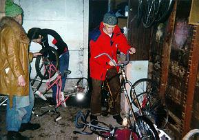
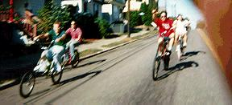
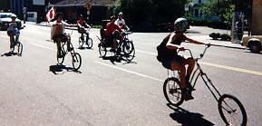
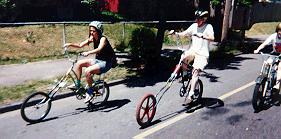
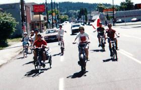
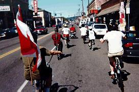
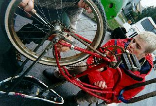
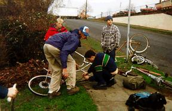
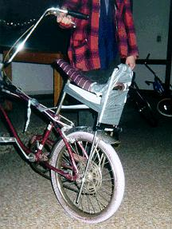

We come now to the fundamental reason for our existence - to jump on our bikes and Fuck Up Stuff. It is because of our frequent forays that we have earned the fear and respect of the surrounding countryside. While each foray is, of course, different, there are several elements which are usually present..

In some cases the excursion will be planned in advance. Our tactical computers will remind us that some nearby area is getting cocky and could use some property damage. There will be a Critical Mass ride or other interesting event that we feel like fucking up. Every once in a while, we can smell someone opening a 40 and must go investigate. More often, however, we will simply be sitting around and decide that we are drunk enough to go Chunking. We immediately hie to the secret laboratory, where the bikes were dumped in various states of brokenness after the last ride, just before we passed out. A frenzy of activity commences as we attempt to repair enough bikes to accommodate us all.



When we determine that our bikes are almost sturdy enough to last the ride, we jump on them and let them take us where they will.
 
Two formations, known as the "clot" and the "flying V", are currently in vogue when in the field. The "clot" is favored for the ease in which it is assumed, while the "flying V" allows the fleet to quickly knife through traffic.

Eventually, we reach the breakdown and repair stage of the journey. Sometimes the failure is slight, and after a few whacks with a pipe, we are again on our way. At other times, we find that replacement parts are needed. When we can't find a suitable piece of hardware in our stash, and can't make do with the usual duct tape, hose clamps, and baling wire, we must forage.

Foraging is a very delicate issue. One must be quite certain that the foraged hardware is truly abandoned. Believe it or not, there are many people who lock their bicycles up in the rain for weeks, and expect to retrieve them later. Although these people are bike abusers, their bikes must not be touched. Parting out a bike that will be used by its owner is bike theft. We hogtie bike thieves and take them for drags.
With a good eye, one can forage ethically. Look for the signs of a truly abandoned bike: rust, flat tires with cracked rubber, spiderwebs, frozen gears, etc.. Often, the expensive parts have already been stripped, while that needed length of rusty chain remains.
While one can keep a mental map of good abandoned bikes in the local area, searching a site that one is not familiar with can be arduous, especially when two people have to double up on one bike. In the picture above, the youth in the plaid shirt is Casey, a local BMXer who found us on a ride, tagged along, and led us to the tan donor vehicle locked to the post.

Repair sessions while in the field can lead to innovative jury-rigging concepts. Here we see a U-lock and lots of duct tape reinforcing the seat stays of the Rail.
(Return to C.H.U.N.K. Operations)
| Copyright 2003 Megulon Five <megulon5@dclxvi.org>. |
|
This work is licensed under a Creative Commons License. | Last modified 12 September 1997. |